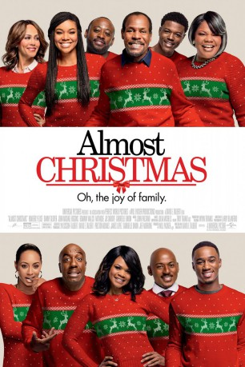

#6019 Almost Christmas
 
 IMDB-Wertung: 6.0 / 10
IMDB-Wertung: 6.0 / 10  Tomatometer: 51
Tomatometer: 51  Metascore: 0
Metascore: 0 
Nach dem Tod der Familienpatriarchin trifft sich eine entfremdete Familie erstmals, um die Weihnachtstage gemeinsam zu verbringen. Der Witwer Walter nimmt das Steuer nun selbst in die Hand. Doch es tauchen nicht nur wie erwartet seine Kinder auf, sondern viel zu früh auch die eigensinnige Tante May, die Schwester der Verstorbenen, sowie weitere unangemeldete Gäste. Walter und seiner Familie bleiben nur wenige Tage bis zum Fest, um sich zusammenzuraufen. Zwischen gemeinsamen Kirchenbesuchen, sich anbahnenden Romanzen und dem obligatorischen Weihnachtsessen muss die Verwandtschaft beweisen, dass sie auch ohne den einstigen Kopf der Familie auskommen kann. Ist die familiäre Bande stark genug, um Weihnachten ein Happy End zu erleben?
Jahr: 2016
Dauer: 110 Minuten
FSK:
Land: USA Studio: Universal PicturesTonspuren: DD5.1 - ,
Untertitel: Deutsch, Englisch,
Auflösung: 1080p (1920x800) Größe: 8448 MB
Genre: Drama, Komödie, Weihnachten
Regisseur: David E. Talbert
Drehbuch: Argyris Papadimitropoulos
Soundtrack:
Darsteller:
 Danny Glover als Walter
Danny Glover als Walter Gabrielle Union als Rachel
Gabrielle Union als Rachel- Mo'Nique als Aunt May
 Kimberly Elise als Cheryl
Kimberly Elise als Cheryl Romany Malco als Christian
Romany Malco als Christian J.B. Smoove als Lonnie
J.B. Smoove als Lonnie Jessie T. Usher als Evan
Jessie T. Usher als Evan John Michael Higgins als Brooks
John Michael Higgins als Brooks Nicole Ari Parker als Sonya
Nicole Ari Parker als Sonya Omar Epps als Malachi
Omar Epps als Malachi- Nadej k Bailey als Niya
 Alkoya Brunson als Cameron
Alkoya Brunson als Cameron- Marley Taylor als Dee
- D.C. Young Fly als Eric
- Keri Hilson als Jasmine
- Gladys Knight als Shelter Director Dorothy
 Gregory Alan Williams als Pastor Browning
Gregory Alan Williams als Pastor Browning- Tara Batesole als Rental Car Clerk
- Jeff Rose als Brian
 Ric Reitz als Coach Packer
Ric Reitz als Coach Packer Ravi Naidu als Dr. Patel
Ravi Naidu als Dr. Patel- Tara Jones als Newswoman
- Johnny Land als AAA Guy
- Keon Rahzeem Mitchell als Young Walter
- Rachel Kylian als Young Grace
- Lyn Talbert als Young Grace Voiceover
- David E. Talbert als Malaci's Mom - Voiceover
- Donnie Simpson als Radio DJ - Voiceover
- Eric Bell Jr. als Little Boy , uncredited
- Nea Dune als Grocery Shopper , uncredited
- Kimani Edwards als Young Cheryl , uncredited
- Wain Jenkins als Church Goer , uncredited
- Angel Knight als Church Lady , uncredited
- Cody Marsh als Homeless Man , uncredited
- Sanaa Mays als Young Cheryl , uncredited
- Richard Molina als Neighbor , uncredited
- Jaxon Rose Moore als Young Rachel , uncredited
- Taniesha Latrice Thomas als Church Member , uncredited
- Travis Thompson als Shopper , uncredited
- Rachel Tracy als Nurse , uncredited
- Aaron Wiggins als Jeffrey , uncredited
- Chanel Young als Grocery Store Shopper , uncredited
- Chloe Spencer als Shelter Assistant
- Stephen A. Smith als Stephen A. Smith
- Monica Brown als Waitress
- Teresa Sykes als Church Lady
- Karl Bynes als Lead Singer
- A. Sabrena Farmer als Older Grace
- Elias Talbert als Young Evan - Voiceover
- Nargis Aniston als Dental Assistant , uncredited
Datei: X:\2016(A-F)\Almost Christmas (2016, FSK, 1920x800).mkv seit 23.04.2017
Festplatte: HD 2016(A-Z)
 Es gibt insgesamt 147 Filme in der Gruppe '2016(A-F)'
Es gibt insgesamt 147 Filme in der Gruppe '2016(A-F)'